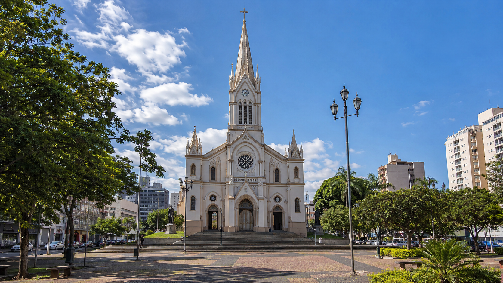

Catedral de São José
Tradição, fé e identidade no centro da cidade.
A imagem mostra a Catedral de São José em destaque, com sua arquitetura imponente e praça ao redor, representando um marco histórico, religioso e urbano de São José do Rio Preto.

A Catedral de São José é um dos marcos históricos e religiosos mais importantes de São José do Rio Preto. A história da cidade está ligada à devoção a São José, padroeiro do município, e à formação de uma pequena capela construída pelos primeiros moradores da região. Com o crescimento do povoado, esse espaço religioso passou a ter grande importância para a organização social e cultural da cidade.
Ao longo dos anos, a antiga capela deu lugar a construções maiores, acompanhando o desenvolvimento urbano de Rio Preto. A Catedral passou a ocupar uma posição de destaque no centro da cidade, tornando-se referência para moradores, visitantes e fiéis. Sua presença na paisagem urbana representa a relação entre fé, memória, arquitetura e identidade local.
Hoje, a Catedral de São José continua sendo um espaço de celebração, encontro e preservação da história rio-pretense. Além de sua função religiosa, ela também pode ser observada como patrimônio cultural, pois ajuda a contar parte da trajetória da cidade. A praça ao redor, o movimento do centro e a arquitetura do edifício tornam o local um ponto importante para conhecer melhor São José do Rio Preto.